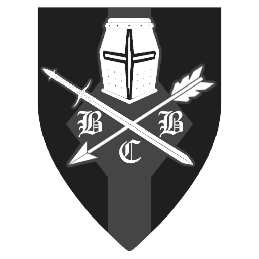

<html lang="en"></html>
<head>
    <meta charset="UTF-8">
    <meta name="viewport" content="width=device-width, initial-scale=1.0">
    <title>BCB branches</title>
    <link rel="stylesheet" href="https://cdn.jsdelivr.net/npm/bootstrap@5.3.0-alpha1/dist/css/bootstrap.min.css" integrity="sha384-GLhlTQ8iRABdZLl6O3oVMWSktQOp6b7In1Zl3/Jr59b6EGGoI1NAEN4npAkBPjF1" crossorigin="anonymous">
    <link href="https://cdn.jsdelivr.net/npm/bootstrap@5.3.3/dist/css/bootstrap.min.css" rel="stylesheet" integrity="sha384-QWTKZyjpPEjISv5WaRU9OFeRpok6YctnYmDr5pNlyT2bRjXh0JMhjY6hW+ALEwIH" crossorigin="anonymous">
    <style>
        body {
            background-color: #f8f9fa;
        }
        .content-section {
            background-color: white;
            border-radius: 8px;
            box-shadow: 0 4px 6px rgba(0, 0, 0, 0.1);
        }
        @media (max-width: 991px) {
            .navbar-brand {
                margin-right: 0;
            }
            .navbar-toggler {
                margin-left: auto;
                margin-right: auto;
            }
        }
        </style>
</head>
<body>
    <nav class="navbar navbar-expand-lg navbar-light bg-light py-3">
        <div class="container-fluid px-4">
            <a class="navbar-brand d-flex align-items-center">
                
            </a>
            <a class="navbar-brand">BCB branches</a>
            <button class="navbar-toggler me-2" type="button" data-bs-toggle="collapse" data-bs-target="#navbarNavAltMarkup" aria-controls="navbarNavAltMarkup" aria-expanded="false" aria-label="Toggle navigation">
                <span class="navbar-toggler-icon"></span>
            </button>
            <div class="collapse navbar-collapse" id="navbarNavAltMarkup">
                <div class="navbar-nav ms-auto text-lg-end text-center">
                    <a class="nav-item nav-link" href="index.html">About us</a>
                    <a class="nav-item nav-link" href="faq.html">FAQ</a>
                    <a class="nav-item nav-link active" href="bcbBranches.html">BCB groups</a>
                    <a class="nav-item nav-link" href="join.html">Join us</a>
                </div>
            </div>
        </div>
    </nav>

    <div class="container content-section">
        <div class="row mb-4">
            <div class="col-md-6 mx-auto">
                <div class="card text-center" style="width: 100%;">
                    
                    <div class="card-body">
                        <h5 class="card-title">Infantry</h5>
                        <p>Our main fighting force. Jack of all trades master of none. The infantry does all the basic tasks and is the head of the spear.
                            Infantry can work independently or along side the commandos and engineers. The infantrys job is to kill and conquer while the other troops provide support.
                        </p>
                        <footer class="blockquote-footer">Rat <cite title="Source Title"></cite></footer>
                    </div>
                </div>
            </div>
            <div class="col-md-6 mx-auto">
                <div class="card text-center" style="width: 100%;">
                    
                    <div class="card-body">
                        <h5 class="card-title">Engineers</h5>
                        <p>Engineers are living embodiments of duality. They bring a lot of destruction (be it mines, breaching charges, or 
                            blowing up the whole building, explosive tubes, etc.), but can bring an equal amount of construction (field camps, 
                            bridges, trench systems, diverse obstacles, etc.). To keep it short, their task is to enhance the survivability of 
                            friendly forces, make them paths and at the same time steer the enemy to a more favorable position. If used correctly, 
                            they can therefore change how a battle is fought to a certain degree.</p>
                            <footer class="blockquote-footer">Tom <cite title="Source Title"></cite></footer>
                    </div>
                </div>
            </div>
        </div>
        <div class="row">
            <div class="col-md-6 mx-auto">
                <div class="card text-center" style="width: 100%;">
                    
                    <div class="card-body">
                        <h5 class="card-title">Commandos</h5>
                        <p>Black Crusader Commandos (BCC) is a group in BCB specialising in reconnaissance. 
                            They operate either as a separate group or attached to the main infantry force, 
                            usually operating drones to gather information and co-ordinate strikes on enemy positions. 
                            They have a dynamic role and are expected to be able to operate as sniper team, support 
                            team, or direct action team depending on the mission.</p>
                            <footer class="blockquote-footer">Leo <cite title="Source Title"></cite></footer>
                        </div>
                    </div>
                </div>
                <div class="col-md-6 mx-auto">
                    <div class="card text-center" style="width: 100%;">
                        
                        <div class="card-body">
                            <h5 class="card-title">Air detachment</h5>
                            <p>The air detachment provides close air support, recoinassance and troop/equipment transport. They work in tandem with the infantry's JTAC.
                                The air detachment currently only operates rotatory-wing aircaft but fixed wing may be available later on.
                            </p>
                                <footer class="blockquote-footer">Rat <cite title="Source Title"></cite></footer>
            </div>
        </div>
    </div>
</div>
<script src="https://cdn.jsdelivr.net/npm/@popperjs/core@2.11.6/dist/umd/popper.min.js"></script>
    <script src="https://cdn.jsdelivr.net/npm/bootstrap@5.3.3/dist/js/bootstrap.bundle.min.js" integrity="sha384-YvpcrYf0tY3lHB60NNkmXc5s9fDVZLESaAA55NDzOxhy9GkcIdslK1eN7N6jIeHz" crossorigin="anonymous"></script>
</body>
</html>